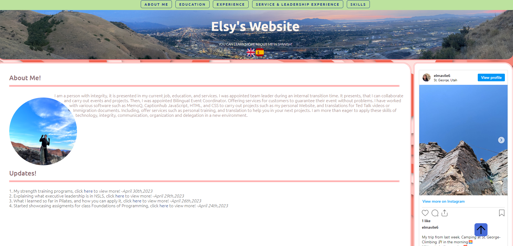
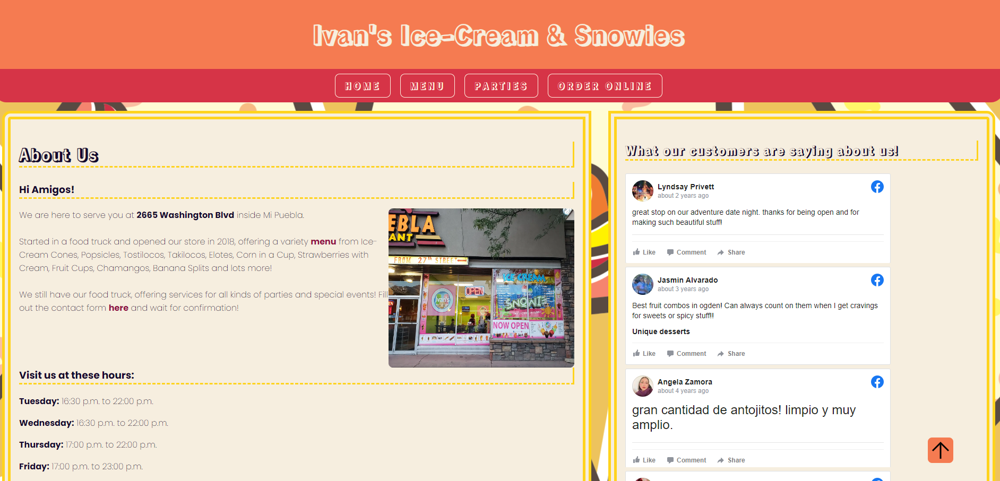

Personal Website
Course: WEB 1400
In this activity, we have applied what I have learned so far from HTML and CSS and created my own personal website.
- What was challenging?
- The challenging part was CSS. The upside, was that the website was based on my resume. So I already had the content available. However, since, this was my first challenge. I didn't know what rules apply to what page, to make it readable. Especially, since my home page is the first impression of me. I decided to go with the colors pink and green, based on colors of the red rocks that we have in Utah.
Ivan's Ice-Scream and Snowies
Course: WEB 1400
In this activity, we have applied what I have learned so far from HTML and CSS and created a website for the resturant.
- What was challenging?
- The challenging part was color matching the website. It was difficult, because I wanted it to be the similar colors of the resturant and include Ice-Cream graphics.